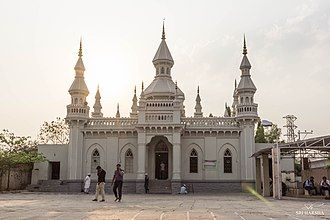
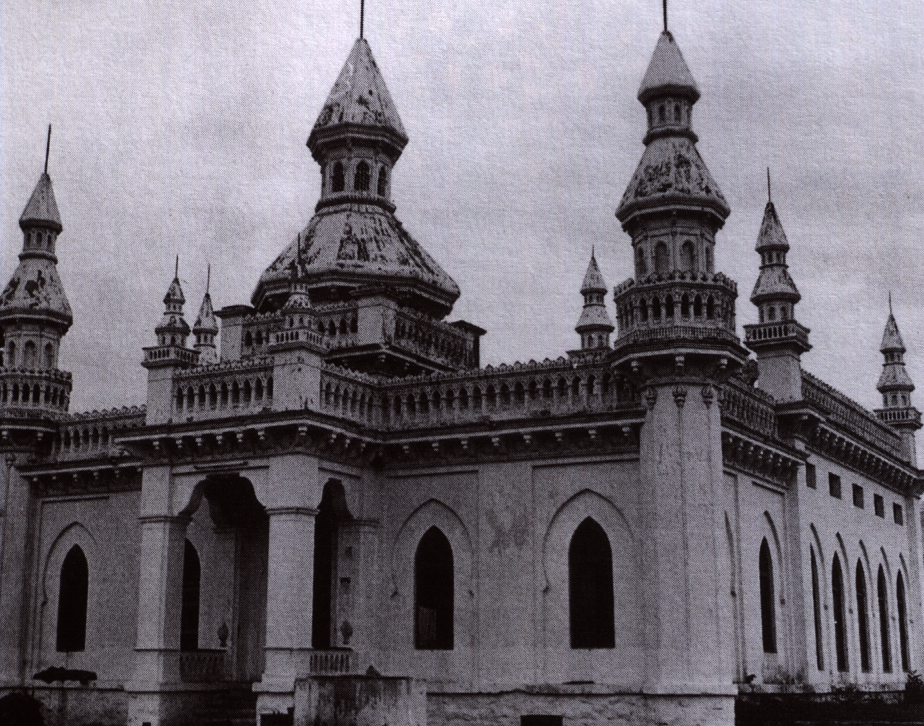

SPANISH MOSQUE

he Spanish Mosque, also known as Masjid Iqbal Ud Daula or Jam e Masjid Aiwan-E-Begumpet, is a mosque within the Paigah Palace, Begumpet, Hyderabad, India.
The construction of the mosque was started by the fifth Paigah Amir, H.E. Nawab Mohammed Fazaluddin Khan, Iqbal Ud Daula, Sir Viqar-ul-Umra in 1900 (due to his sudden demise in 1902) and completed by his heir and elder son H.E Nawab Sultan Ul Mulk Bahadur, VI Amir of Paigah through Princess Jahandarunissa Begum, Lady Vicar Ul Umra, After his return from Spain, as he was very much inspired by the Cathedral–Mosque of Córdoba.
The exterior and interior of the Spanish Mosque are mostly similar to the Cathedral–Mosque of Córdoba in Spain and Jama Masjid Gulbarga, Karnataka, India. It shows state-of-the-art interiors and architecture.[2][3]

How to reach:

By Air
The nearest airport is in hyderabad

By Train
The nearest railways is in hyderabad

By Road
spanish mosque, the most famous tourist destination in Hyderabad, can be used as a landmark. A bus,cab,local rickshaw can also be taken to reach the capital.